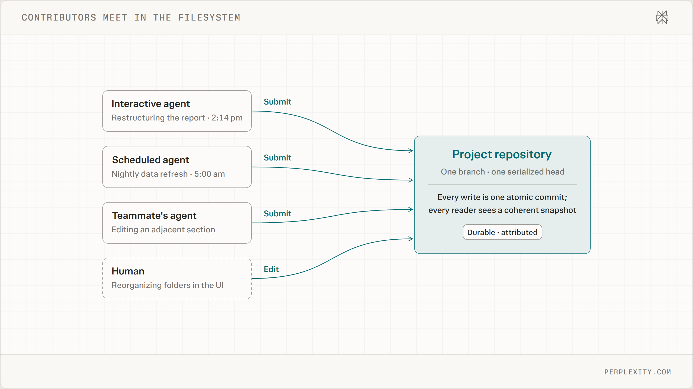
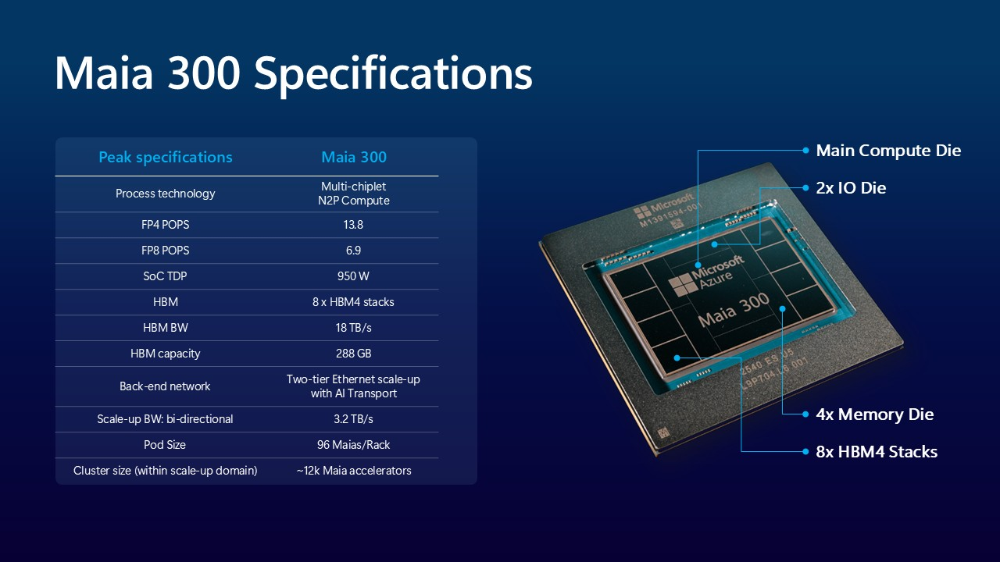
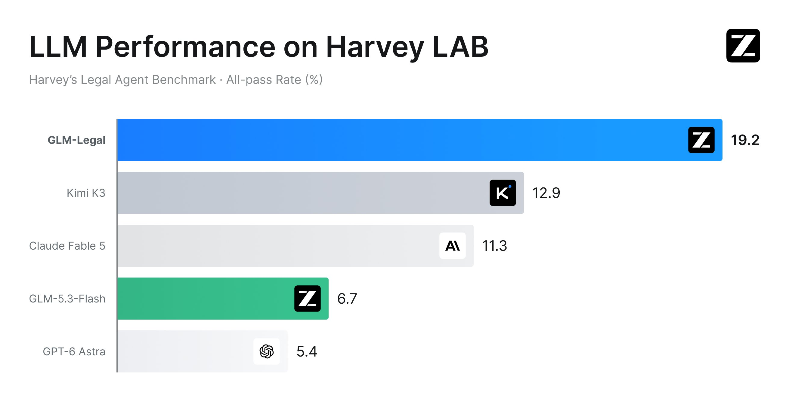

AI Intelligence Daily · 2026-10-13（周二）
今日一句话判断
专栏一｜新闻
本栏条目：国际 5 · 国内 2。10-12 白天快讯全部 SILENT（near-miss 中的 Maia 300、ZCode 3.15.1 本期按日报标准正式入栏）；Daily 10-10～10-12 已收条目窗内无实质新进展 → 不重复。
1. SpaceXSI 推出 The X Subscription：Cursor、Grok、Grok Bot、X Premium 合并为一个订阅，共享周用量池；新套餐下 Cursor 第三方模型改按 API 价计费
利益相关提示：本条涉及 Grok Bot 所在产品线。以下只陈述官方页面事实，判断按与其他厂商相同的标准给出。
发生了什么（事实） - @SpaceXSI：「We've unified plans across Grok, Cursor, and X Premium. Introducing The X Subscription.」@cursor_ai 同步宣布 Cursor 并入该订阅；现有 Cursor 订阅者可保留原套餐或切换。 - Cursor 定价页现列 Free $0 / Plus $8 / Premium $30 / Super $100 / Ultra $200（用量分别为 Plus 的 4x / 15x / 50x），Teams $30+/席；Plus 仅限 Grok 模型；Premium 起含云端 Agent 与自动化、Origin 代码托管、Bugbot 代码评审、Grok Bot，第三方模型按 API 标价另计。 - Cursor 官方论坛帖：Grok 与 Cursor 共享一个按周刷新的用量池；每档在 Grok 模型上的编码用量至少为对应旧 Cursor 套餐的 2 倍；现有 Cursor / SuperGrok / X Premium 用户的切换选项「未来几天」陆续开放。帮助页注明切换不可撤销；新客户直接进入 The X Subscription。
我的判断 - 这是 AI Coding 订阅的计价逻辑变化，而不只是捆绑促销：IDE 与自家模型共用一个用量池，第三方模型被挪到按量计费。厂商用订阅把用户引向自家模型，同时把多模型路由的成本显式转给用户。 - 长期信号：「IDE + 模型 + 云端 Agent + 代码托管 + 评审 + 通用助手」被收进同一个账户和计量体系，Coding Agent 的竞争单位从「工具」变成「全栈订阅」。
往后看 - 观察其他 Coding Agent 厂商是否跟进「自家模型包量、第三方按量」；企业采购面对的将是跨产品统一用量池与 SSO / 管理控制台的打包。 - 风险点：切换不可撤销、旧档对新用户关闭、第三方模型成本上升，可能推动重度多模型用户转向 BYOK 或其他工具。
对智能体互联网：间接。统一账户 + 统一用量池意味着身份与计量在一个平台内聚合；跨 Agent 调用时「谁付费、算谁的额度」会成为委托链上的显式字段。
对 Work / Agent 引擎：强相关。Harness 层需要把模型路由与计费策略耦合（自家模型包量、第三方按量）；周刷新用量池对长任务 / 后台 Agent 的配额调度和降级策略提出要求。
建议动作：对标定价结构，评估自家 Work/Agent 产品「订阅池 + 按量溢出」模型；在 Harness 中把每步模型调用的成本归属做成可观测字段。
来源：主 X @SpaceXSI · X @cursor_ai · Cursor Pricing · 补 Cursor 论坛：Introducing The X Subscription · Cursor 帮助页
2. Meta 发布 Muse Wonder / Muse Wonder Full：定位「个人与专业 Agent 任务」的前沿模型，强调 Active Memory 与 Active Focus
发生了什么（事实） - Meta Newsroom 发布「Introducing Muse Wonder and Muse Wonder Full: Frontier Models for Agents」，称其为 Meta 迄今最强模型，面向个人与专业 agentic 任务（理赔、租约、财务、法律、医疗、编码）。 - Muse Wonder 今日通过 Meta Model API 与 Muse Code 提供；Muse Wonder Full 今日向 Muse Code 订阅者提供；Muse Wonder 将「很快」驱动个人 Agent 产品 Muse，先向订阅者推出。 - 两项官方点名能力：Active Memory（跨对话携带对用户重要的信息并在相关任务中调回）；Active Focus（任务变难时持续推进、换方法、从错误中恢复，必要时澄清，并在执行重要动作前确认）。 - 安全：训练为不经许可不共享隐私信息、拒绝有害请求；按 Meta Superintelligence Scaling Framework 发布，完整安全评估报告「即将发布」。OpenRouter 同窗宣布上线 Muse Wonder。
我的判断 - Meta 第一次把旗舰模型直接以「为 Agent 而生」命名并发布，且 Memory 与「执行前确认」写进模型卖点，而不只放在产品层。这说明前沿厂商正把 Agent Loop 的部分职责（记忆调回、错误恢复、人机确认）下沉到模型训练目标。 - 发布节奏：Muse（09-08）→ Muse Code → Muse Wonder，Meta 在两个月内拼出「个人 Agent + Coding + API」完整产品线。
往后看：完整安全报告与 research blog 上的基准细节；Muse 订阅者上线节奏；Muse Code 与 Cursor / Claude Code / Codex 的价格与能力对比。
对智能体互联网：中相关。个人 Agent（Muse）与 PAP/Poppy 这类个人 Agent↔企业协议直接相关：模型层的「执行前确认」与协议层的委托 / 授权确认需要对齐。
对 Work / Agent 引擎：强相关。若模型自带记忆调回与「重要动作前确认」，Harness 的 Memory 层与审批层需要决定信任模型自觉还是由运行时强制。建议保持运行时强制，模型行为作为补充。
建议动作：通过 Meta Model API / OpenRouter 小规模 PoC：长任务错误恢复、跨会话记忆调回、确认行为是否可被 system prompt / 工具策略稳定控制；等安全报告后再评估生产使用。

来源：主 Meta Newsroom · X @AIatMeta · 补 X @OpenRouter
3. Anthropic 公开反蒸馏防御体系：推理链「组织隔离 + 禁止编辑历史上下文」+ 两阶段分类器，称蒸馏者获取数据量下降约 90–99%
发生了什么（事实，均为 Anthropic 自述） - 博文「Strengthening our defenses against distillation attacks」称，新方法已使蒸馏者采集的数据量下降约 90–99%。防御重点几乎全部放在让推理过程（thinking）难以被获取。 - 三类措施：① 控制推理流向：Claude Fable 5.1 / Opus 5.5 引入 preserved thinking，2026-08-31 及之后新建的 API 账号不能编辑 Claude 的历史上下文；禁止较早、防护较弱的模型读取新模型推理；Sonnet 5.5 起推理记录仅对发起请求的组织可访问。② 两阶段分类器拦截推理提取，称稳健度接近生物武器防护，误报率 <0.1%，覆盖 Sonnet 5.5、Opus 5 / 5.5、Fable 5 / 5.1。③ 提高重复尝试成本：收紧限额、封号；自 9 月 24 日起，在误报率 <0.1% 的领域（含蒸馏），对被安全机制拦截的请求恢复收费。 - 文中再次点名：称智谱在 GLM-5.3 研发中蒸馏美国模型的网络安全能力、Kimi 请求被暗中转发至 Claude。截至本期未检索到智谱 / 月之暗面对本文的公开回应；Anthropic 9 月已就同类指控发过报告。
我的判断 - 技术上最值得关注的不是「抓坏人」，而是 推理产物被当作有归属、有访问控制的资产：组织级隔离、禁止跨账号编辑上下文、禁止跨模型读取。这是模型 API 从「无状态文本接口」走向「带权限语义的上下文对象」的信号。 - 这些做法也有成本：Anthropic 自述合法用户需更新集成；对「拦截也收费」的接受度存在争议空间。中美实验室指控属单方叙述，应与被点名方说法对照，不直接当定论。
往后看：被点名厂商是否回应；「新账号不可编辑历史上下文」对 Agent 框架（上下文压缩、历史改写、多模型接力）的兼容影响；其他厂商是否跟进推理链组织隔离。
对智能体互联网：中相关。「推理产物仅归发起组织」是跨 Agent 调用中上下文所有权与可转授问题的早期样例：A 组织的 Agent 能否把 Claude 推理转交给 B 组织的 Agent，将受平台策略约束。
对 Work / Agent 引擎：强相关。Harness 若对 Claude 做上下文改写、跨模型接力（例如把 Claude thinking 交给另一模型总结）或多租户共享推理缓存，需要核对 preserved thinking 与组织隔离限制；多租户场景下推理块的租户归属要显式建模。
建议动作：检查自家 Agent Loop 是否依赖编辑 / 回填历史 assistant 消息或 thinking 块，用 2026-08-31 后新建的 API 账号做兼容测试；把「推理块不可跨租户 / 跨模型传递」纳入上下文管理规范。
来源：主 Anthropic：Strengthening our defenses against distillation attacks · X @AnthropicAI · 补 Anthropic：GLM-5.3 and the Spread of Advanced Cyber Capabilities（Sep 29）
4. Perplexity 公开 Projects 文件系统设计：给人与 Agent 用的「Git forge」，每个 Agent 独立沙箱、向共享仓库原子提交
发生了什么（事实）
- Perplexity 工程博文「Building shared workspaces for people and agents」：Projects（Spaces 的演进）中，人和多个 Agent 在同一持久化工作区里长期协作，底层文件系统被实现为面向人-Agent / Agent-Agent 协作的 Git forge。
- 架构要点（来自官方博文摘录）：每个 Agent 在独立隔离沙箱中持有仓库本地副本，由小型 CLI 经控制面定位仓库、通过 Git 服务拉取 / 提交；Agent proxy 在请求到达 Git 服务前做访问检查；Git 服务是 Git 原生 upload-pack / receive-pack 的薄封装，决定哪次提交成为最新 head（并发提交校验 head，过期则重放）；大文件走 Git LFS 短时链接直连 S3；存储基于 AWS S3Files，按隔离 cell 划分；提交后后台抽取文本供 Agent 加载上下文。
- 官方配图展示：交互式 Agent、定时 Agent、同事的 Agent 与人类编辑共同向「一条分支、一个串行 head」提交，「每次写入都是一次原子提交，每个读者看到一致快照」。
我的判断 - 这是 Work 类 Agent 产品多 Agent 并发写共享状态的一份少见的一手工程答案：用 Git 语义（原子提交、串行 head、可归因历史）代替自研同步协议。与 Cursor「Git at any scale」、各家沙箱方案放在一起看，「工作区 = 版本化仓库」正在成为 Cloud Agent 的事实标准。
往后看：冲突重放在非代码文档上的效果；Brain（记忆）与仓库历史的关系；性能与成本数据是否公开。
对智能体互联网：中相关。Agent proxy + 提交归因 = 工作区层面的 Agent 身份与授权执行点，可对照「Agent 身份 → 资源访问」的落点设计。
对 Work / Agent 引擎：强相关。可直接对照 Workspace / Sandbox / 多租户设计：每 Agent 沙箱 + 共享仓库 + 代理鉴权 + cell 隔离 + 提交后索引，是一套完整参考架构。
建议动作：拆解博文做架构对标（并发提交冲突处理、LFS 直传、cell 隔离）；评估把自家 Workspace 状态迁到「Git 语义 + 代理鉴权」的 PoC。

来源：主 Perplexity：Building shared workspaces for people and agents · X @perplexity_ai · 补 Perplexity Projects 产品页
核验说明：perplexity.ai 对本机 curl 返回 403、WebFetch 超时；架构细节取自搜索引擎索引的官方博文原文摘录与官方 X 帖，未能整页直读。
5. Microsoft：Azure Maia 扩至多吉瓦部署，Maia 200 已承载 Copilot 生产流量，Maia 300 面向长上下文与多步 Agent 任务（2027）
发生了什么（事实） - Scott Guthrie 署名博文：自 2027 年起把 Azure Maia 扩展到多吉瓦级部署，使 Maia 成为 Microsoft 产品与服务的主力推理系统。 - Maia 200 已在生产服务 Microsoft Copilot 与 MAI 团队，GitHub Copilot 与 Microsoft Foundry 计划年底前接入；运行 OpenAI 模型、MAI 模型及主流开源模型；在 Teams / Copilot / Cowork 内置 AI 场景下，每瓦 token 数最高为领先 GPU 方案的 1.7 倍（官方口径）。 - Maia 300：推理优先架构，面向长上下文、低延迟对话与持续多步 agentic 任务；官方预期每兆瓦 token 比领先 GPU 系统多 40%，96 加速器满配机架吞吐最高为 Maia 200 的 7 倍；软件定义数据流 + AI 辅助 kernel 优化。
我的判断：大厂开始按「Agent 工作负载」（长上下文、decode-heavy、多步）来设计推理硅片，Agent 的 token 经济学会被自研芯片进一步压低。这属于基础设施层的中长期信号，对用户项目短期没有直接动作。
往后看：GitHub Copilot 年底迁到 Maia 后的延迟 / 价格变化；Foundry 上的第三方模型是否也跑在 Maia 上。
对智能体互联网：无直接启示
对 Work / Agent 引擎：间接。长上下文 / 多步任务的单位成本下降，会让「长驻后台 Agent」更经济；Harness 的上下文策略（压缩 vs 保留）需随成本曲线复核。
建议动作：关注后续；暂无需行动。

来源：主 The Official Microsoft Blog：Microsoft to expand Azure Maia system to multi-gigawatt deployments
6. 智谱 Z.ai 发布 GLM-Legal（基于 GLM-5.3-Flash）：强调「模型与 Agent Harness 共同迭代」的垂直训练方法，将接入桌面 Agent AutoClaw
发生了什么（事实） - Z.ai 博文「GLM-Legal: Advancing Agentic Legal Intelligence」：基于轻量 GLM-5.3-Flash；官方称 Harvey LAB 全通过率 19.2%（较基座 +12.5 个百分点），在 LegalBench、PLawBench 上与前沿闭源模型持平（官方自评）。 - 方法：领域 mid-training + 在数万个真实法律环境中做 RL 后训练；明确写出 Harness 作为运行时编排框架（管理任务上下文、连接工具、回传执行反馈）与模型训练「同步迭代」：训练暴露 Harness 瓶颈，Harness 改进反过来塑造模型。 - 将接入 Z.ai 的「桌面原生 Agent 平台」AutoClaw（示例：在 Word 中带修订与批注输出合同修改）；API 走申请制 Beta。
我的判断：垂直模型本身影响有限（B），但「Harness 与模型共训」被厂商写成方法论，说明专业 Cowork 场景的竞争点正在从模型能力转向模型 × Harness × 生产反馈闭环。
对智能体互联网：无直接启示
对 Work / Agent 引擎：中相关。为「Harness 侧信号（上下文装配、工具反馈）回流训练 / 评测」的工程设计提供厂商一手参照。
建议动作：关注后续；如有垂直 Work 场景，可借鉴其「生产验收标准 → 损失信号」的评测拆解。

来源：主 Z.ai Blog：GLM-Legal · X @Zai_org
7. 智谱 ZCode Desktop 3.15.1：支持 MCP App（UI 插件）、子 Agent 分别指定模型、自主模式危险命令强制确认、飞书群协作
发生了什么（事实） - 官方 changelog 3.15.1 新增：UI 插件（MCP App）支持；消息流内可视化交互界面；Workflow 创建前调参、运行中改并发、保存运行以重放；Workflow 可为每个子 Agent 单独指定模型；可在飞书群聊与独立话题中与助手协作；内置浏览器站点权限管理（摄像头等需确认）；订阅用户可随机获得 GLM HighSpeed 试用。 - 安全相关：「自主模式」下危险命令执行前需确认；修复内置浏览器默认放行站点权限、Windows 通过链接启动应用的安全问题。
我的判断：既有 Desktop 的功能更新，不计入新客户端发船（desktop_work_agent_shipping 仍为 0）。看点是三项已在国际产品上出现的能力（MCP App、子 Agent 级模型路由、自主模式危险命令闸门）被国内一线 Coding Desktop 补齐。
对智能体互联网：间接。MCP App 让 MCP 从「工具协议」延伸到「UI 能力分发」，插件生态的信任与审核面随之扩大。
对 Work / Agent 引擎：中相关。子 Agent 级模型选择 + 运行中改并发 + 运行可重放，是多 Agent Workflow 引擎的可对照需求；「自主模式 ≠ 免确认」值得纳入默认安全策略。
建议动作：纳入需求对照表（子 Agent 模型路由、运行重放、危险命令闸门）；暂无需 PoC。
配图：官方 changelog 页无该版本配图，本条不配图。
专栏二｜话题热议
- The X Subscription 讨论（国际）：@cursor_ai 官宣帖数小时内回复与引用量较高（帖子公开指标可见）；Cursor 论坛同名帖集中在「旧套餐是否保留、第三方模型改按量后的成本」。属于官方回应前的情绪期，事实以定价页为准。
- OpenAI Devs：WebMCP + Annotations（国际）：@OpenAIDevs 演示在「ChatGPT 的浏览器」中用 annotations 配合 WebMCP 给 Agent 更多页面上下文（自定义标注控件 + 建议提示词）。这是开发者教程视频，不是新规范发布；但说明 WebMCP 正在被 OpenAI 作为浏览器 Agent 的页面能力接口推广，与 Agent 互联主线相关，值得盯是否出正式文档。
- HN「AI is a tool and using it well takes skill」（约 186 分 / 179 评论，10-13 05:40 CST 发帖）：本窗 AI 类最高热帖，争论集中在 Agent 编码的技能门槛与代码质量；属于观点热议，不构成事件。
- Mistral「Le Chonk」视觉定位预告：@MistralAI 称在 Dense 200 上 42%、领先闭源前沿模型（官方 X 自述），未见配套博文 / 模型卡 → 只记线索，不入新闻栏。
- 国内：量子位窗内热稿有「GPT-6 Astra 协助证明 57 年『摆圆』难题」「华为 AI 靠 RSI 通关 25 款游戏」「智谱 490 tokens/s 新模型」等；前者未见 OpenAI 官方一手，后两者为媒体报道，暂不升格。蚂蚁灵光 2.0 仍无官方一手。
互动数字只引用可见的一手帖或公开榜单数据，不编造。
专栏三｜开源雷达
| 项目 | 核验点（约 10-13 08:20 CST） | 看点 / 建议 |
|---|---|---|
| microsoft/mxc | ★2,719（Daily 10-12 ★2,656，+63）；main 新 commit：10-13 03:25 CST「[Bubblewrap] loopback stub resolver 下解析 DNS」、05:03 CST「vpack 仅提升 SPDX 2.2 manifest」；release 仍 v1.0.0（10-07） | Linux bubblewrap 后端网络细节与供应链 SBOM 打包在持续打磨；关注，暂无需行动 |
| openai/math | ★14,420（+348）；10-13 05:55 CST 新 push 仅为 Codex 提交的「新开 PR 自动锁定讨论」 | 非勘误进展；CORRECTION 线不变 |
| @github/copilot（npm） | 1.0.96 latest（10-13 02:51 CST），1.0.97 预发布已到 -1 | 例行 CLI 迭代 continuum |
| @minimax-ai/code | 0.6.9（10-12 20:35 CST） | CLI 补丁；Desktop 仍 3.1.1 |
| higress | 仍 v2.2.5 | 持平 |
本窗未见一线厂新开源 Agent Runtime / 协议仓库的可核验暴涨数据；不硬写「很火」。
重点事件新进展
- Windows MXC：此前 Codex×MXC 已入 Daily 10-10。今日新增：main 分支出现 Linux Bubblewrap DNS 修复、SPDX manifest 打包调整两条实质 commit，★2,719。判断：工程 continuum，路线未变；仍无新 agent 接入的官方宣布。
- Anthropic 中美实验室蒸馏线（关联 Daily 10-10 Cyber Mission）：此前已跟踪 Anthropic 的 Cyber Mission / GLM-5.3 报告。今日新增：公开反蒸馏工程细节，以及 preserved thinking、推理组织隔离、拦截收费等 API 层后果（见新闻 3）。判断：从「指控」进入「API 规则变化」，对开发者有实际影响，已升级为独立条目。
- Meta Muse 线（watchlist 16）：此前 Muse 个人 Agent（09-08）。今日新增：Muse Wonder 模型系列（见新闻 2）。判断：发生实质变化，Meta 个人 Agent 的模型底座升级，与 PAP 线的交集上升。
- PAP / TRAE / Qoder Fast / Gemini agent / AgentCorruption / GhostAction：窗内无新一手实质进展，不展开。
今天正在形成的趋势
- Agent 能力下沉到模型目标：Meta 把记忆调回、错误恢复、「执行前确认」写进模型卖点；智谱写明 Harness 与模型共训。模型与 Harness 的分工线在移动，Harness 要决定哪些行为信任模型、哪些由运行时强制。
- 订阅计量统一，第三方模型改按量：The X Subscription 把 IDE、模型、云端 Agent、托管、评审合进一个周用量池；Anthropic 对被拦截请求恢复收费。计费正在成为 Agent 平台的控制面，不只是商业条款。
- 推理产物有了归属和访问控制：组织级隔离、禁止跨账号编辑上下文、禁止跨模型读取。上下文正在从「随便拼接的文本」变成「带权限的对象」。
- 工作区 = 版本化仓库：Perplexity 用 Git forge 承载多 Agent 共享状态，和 Cursor、各家沙箱方案一样走向 Git 语义 + 每 Agent 隔离沙箱。
- 推理硅片按 Agent 负载设计：Maia 300 明确面向长上下文与多步 agentic 任务，长驻 Agent 的单位成本会继续下降。
对智能体互联网最值得吸收的东西
- 上下文所有权进入协议视野：Anthropic 的「推理仅归发起组织」+「不可跨模型读取」，提示跨 Agent 委托时需要声明上下文 / 推理产物的可转授范围。建议在委托与授权模型中加入「上下文产物的归属与转授」字段，对照 PAP / PACT 现有字段看缺口。
- 个人 Agent 的确认语义要对齐：Muse Wonder 在模型层「重要动作前确认」，PAP 在协议层做登录 / 委托确认。两层的确认谁说了算、如何留证据，值得在 Trust 设计中明确。
- WebMCP 作为浏览器侧能力接口的扩散：OpenAI 开始推广 WebMCP + annotations，网站向 Agent 暴露能力可能出现「MCP 服务端」之外的第二条路径，值得纳入 Discovery 设计观察。
对 Work / Agent 引擎最值得吸收的东西
- Perplexity Projects 的 Workspace 架构：每 Agent 沙箱 + 共享仓库 + Agent proxy 鉴权 + cell 隔离 + 提交后索引，是 Workspace / 多租户的高价值对标对象，建议拆解。
- 对 Claude 新规则做兼容测试：preserved thinking（新账号不可编辑历史上下文）、推理组织隔离，可能影响上下文压缩、历史改写、多模型接力类 Harness 功能，宜尽早回归测试。
- 路由 × 计费耦合：参考「自家模型包量、第三方按量」和子 Agent 级模型选择（ZCode），把每步调用的模型、成本、额度归属做成 Harness 的一等可观测字段。
值得继续跟踪
- 事件：The X Subscription，接下来重点观察：存量用户切换选项的上线进度；第三方模型按量计费对用户与竞品的影响；其他 Coding Agent 厂商的定价回应。
- 事件：Meta Muse Wonder，接下来重点观察：完整安全报告；research blog 基准；Muse 订阅者上线；Muse Code 定价。
- 事件：Anthropic 反蒸馏规则，接下来重点观察：被点名厂商回应；开发者对 preserved thinking / 拦截收费的兼容反馈；其他厂商是否跟进。
- 事件：Perplexity Projects / Numbat，接下来重点观察：更多工程细节；其 changelog 提到的开源 Agent 检测与响应层 Numbat 的发布时间与仓库（本期未核到时间，未入栏）。
- 事件：Azure Maia，接下来重点观察：GitHub Copilot / Foundry 年底迁移。
- 事件：WebMCP，接下来重点观察：OpenAI 是否发布正式文档或规范。
- 延续：PAP（Sierra London 10-15）· TRAE（TraeWork EOL 10-23）· MXC · 灵光 2.0 官方一手 · ARTEX · openai/math。
- 到期：GPT-5.5 退役 10-14（明天）；MiniMax M Plan 首月 5 折截止 10-14；Sierra London 10-15；RTX Spark 10-16；OpenRouter ElevenLabs 5 折至 10-19；Copilot Default Enablement / StepFun Launch Night 10-22；MCPCon / TraeWork EOL 10-23；GitHub Universe 10-28–29；Mistral L4 权重 10-31；Anthropic Usage Policy 线索 11-12；ZCode 邀请活动至 11-13。
未来信号
- 个人超级智能的产品化路径：Meta 明确「Muse Wonder → Muse 个人 Agent」，加上 Active Memory 与执行前确认，个人 Agent 正从概念演示走向付费订阅产品。
- 「全栈 AI 订阅」形态：社交、通用助手、IDE、云端 Agent、代码托管被打包进一个账户和用量池，Agent Economy 的结算单位可能先在平台内部统一。
- 推理链成为受保护资产：如果更多厂商跟进，「可审计但不可导出」的推理产物会改变 Agent 可观测性与蒸馏 / 评测生态。
价格 / 订阅雷达
- The X Subscription：Free $0 / Plus $8（仅 Grok 模型）/ Premium $30 / Super $100 / Ultra $200（4x / 15x / 50x Plus 用量），Teams $30+/席；Premium 起 Cursor 第三方模型按 API 标价另计；周刷新共享用量池；切换不可撤销；新客户直接进入新体系（Cursor Pricing）。
- Anthropic：自 9-24 起，对误报率 <0.1% 领域（含蒸馏）中被安全机制拦截的请求恢复收费（本期首次在官方博文中披露细节）。
- ZCode：邀请返 Token Boost 活动 10-12 至 11-13；订阅用户随机获得 GLM HighSpeed 试用。
- 延续：MiniMax M Plan 首月 5 折至 10-14；OpenRouter ElevenLabs 5 折至 10-19；Qoder Fast 0.8x credits。
信源与方法
- 时间窗：2026-10-12 08:00 → 2026-10-13 08:00 Asia/Shanghai；10-12 白天由快讯 6 轮（09:20→23:20，全部 SILENT）覆盖，本期回核 near-miss（Maia 300、ZCode 3.15.1 按日报标准入栏）；23:50 → 08:16 夜间窗独立扫描。
- 官方：按
sources/VENDOR_OFFICIAL.md做 P0+P1 巡检（详见flashes/.scan-2026-10-13-daily.mdvendor-check）：OpenAI RSS 顶仍 Oct 9；Anthropic research 新文；Meta Newsroom 新文；Microsoft 官方博客 Maia；Google AI RSS 顶 Oct 7；GitHub changelog 10-12 两条非 Agent 条目；HF 顶 Oct 9；NVIDIA OCP（10-12 23:00 CST，基础设施，未入栏）；Windows / JetBrains Air / Sierra / Cursor changelog 无窗内新；AWS ML 10-12 三篇常规文章。 - 连接器：X
x命名空间search_posts_all（国际 P0/P1 cohort 9 条、国内 + 协议 cohort 7 条）+get_posts_by_ids展开链接；GitHubgh api；npm view；curl / WebFetch / WebSearch；HN Algolia；量子位首页。 - 配图：6 张均来自对应官方原文或官方帖媒体；无 AI 生成、无 Logo 凑数；ZCode 条无原文配图，不配。
- 脆弱面：perplexity.ai 403 / 超时（以官方帖与索引原文摘录核验）；ai.meta.com 对 curl 返回 400（改用 about.fb.com Newsroom）；openai.com/index 常 403（RSS 可用）。